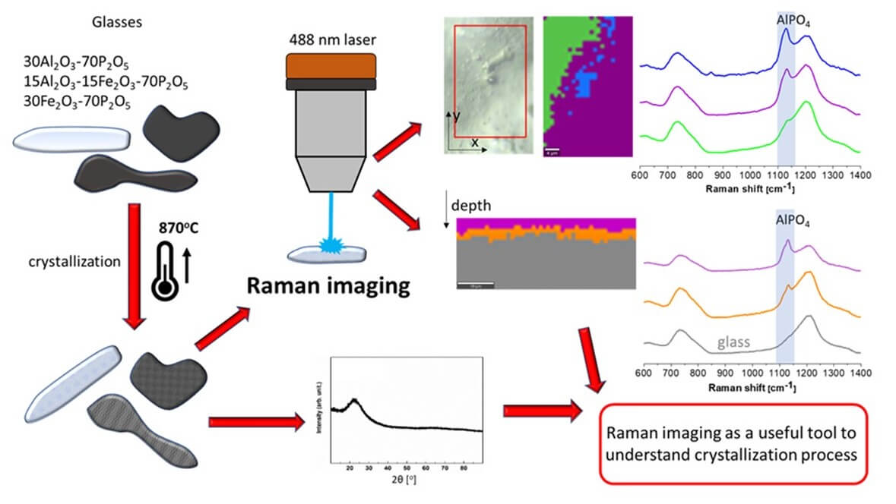

Raman imaging as a useful tool to describe crystallization of aluminum/iron-containing polyphosphate glasses
Polyphosphate glasses are materials of a wide spectrum of applications in many fields. The subject of the work is polyphosphate glasses containing aluminum and iron. Three compositions of the glasses were obtained and the materials have been characterized in terms of their crystallization. The differences in crystallization behavior between powder and bulk materials were compared. The crystallized materials were analyzed by Raman scattering spectroscopy and X-ray diffraction method. It was evidenced that depending on the glass composition the main crystalline phases were Al(PO3)3, AlPO4, FePO4, Fe3(P2O7), Fe4(P2O7)3, FePO4. The glass crystallization leads to enrichment of the residual glassy phase in P2O5 and increases its polymerization. Thus, it was observed the glass inhomogeneities are being increased due to crystallization. The two dimensions spectral maps of the bulk crystallized samples were executed to describe the mechanism and type of crystallization. The depth profiling proves the differences between surface and interior phase composition.
The most important conclusions are:
- The pristine glass materials are built of chains which are the longest for iron-free glass and with the Fe2O3 content are being gradually depolymerized.
- The glass network becomes less rigid what is observed as the decrease of Tg and ∆Cp. The effect is consistent with the observed depolymerization of the phosphate network and increases the mean bond ionicity.
- In the case of the aluminum-phosphate material, there is evidenced the formation of AlPO4 and Al(PO3)3 compounds in which formation and quantity were confirmed by XRD and Raman.
- It was evidenced that the glass crystallization proceeds from the surface. On which it was observed AlPO4 layer which was evidenced by Raman imaging and not visible in XRD.
- The crystallization confirms the inhomogeneous character of the glass with the possible evaporation of P2O5 out of the surface.
- The residual vitreous phase is mostly pure P2O5. In the iron-containing glasses crystallize Fe3(P2O7)2, Fe4(P2O7)3, and FePO4. The first compound is the mixed iron valence of the Fe3+/Fe2+ similar to in the pristine glass. Its quantity on the surface is lower what indicates their oxidation with the formation of Fe4(P2O7)3 and FePO4 phases. Thus, during the devitrification Fe2+ is transformed to Fe3+ and the mixed iron valence compound is transformed to the pure Fe3+ compounds.
- The oxidization proceeds from the surface to the bulk what is related to the diffusion of atmospheric oxygen from the surface.
- Partial substitution of Al/Fe slows down the glass crystallization and promotes the formation of berlinite like the FePO4 phase.
- The partial substitution may prevent the iron-phosphate glass crystallization. The opposite effect may be detected in the case of the aluminum-phosphate glasses where iron inhibits aluminum-phosphates crystallization.